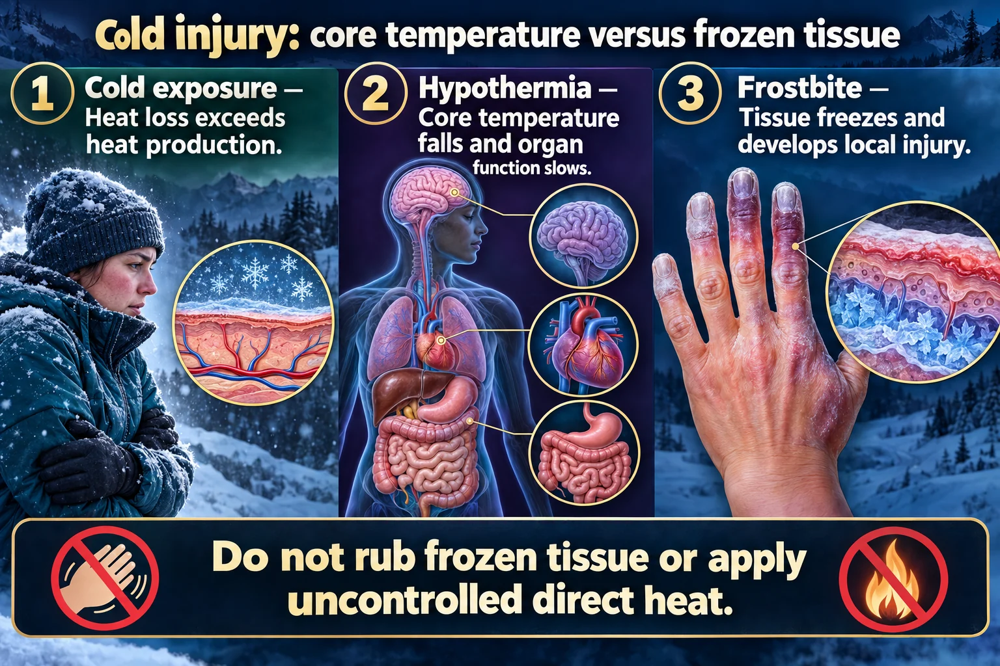

The local cold injury — tissue that literally freezes
Frostbite is tissue that actually freezes: ice crystals form in and around the cells while the vessels clamp down, so the part is starved of blood at the same time as it is being torn apart from the inside. Frostbite is the LOCAL injury; hypothermia (NG-041) is the SYSTEMIC one — and the two arrive together far more often than not.
📄 Simple Nursing original — opens in Drive →
Two injuries happening at once: ice inside the tissue, and no blood getting to it.

Do not rub frozen tissue or apply uncontrolled direct heat.
Cold exposure
Heat loss exceeds heat production.
Hypothermia
Core temperature falls and organ function slows.
Frostbite
Tissue freezes and develops local injury.
Hypothermia care
Handle gently, prevent further heat loss and use the appropriate rewarming pathway.
Frostbite care
Protect tissue, avoid rubbing and prevent refreezing after thawing.
Assess
Mental status, breathing, circulation and the extent of injury.
The final tissue loss is decided as much by the clotting and inflammation after thawing as by the freeze itself — which is why the appearance on day 1 does not predict the outcome.
Same depth language as every other wound page — this time the injury came from cold.
You may also see it split simply into two: superficial frostbite (skin blue, mottled or waxy yellow; clear blisters; skin still moves over the tissue below) and deep frostbite (skin white, hard as wood, blood-filled blisters, progressing to gangrene). The true depth cannot be judged until after rewarming — and often not for days.
| Frostbite (this page) | Hypothermia (NG-041) |
|---|---|
| LOCAL tissue freezing | SYSTEMIC drop in core temperature |
| Fingers, toes, ears, nose, cheeks | The whole body; core temp < 35 °C (95 °F) |
| Threatens the limb | Threatens the life — cold myocardium → V-fib |
| Treat with rapid rewarming of the part in warm water | Treat with core rewarming, gentle handling, cardiac monitoring |
| Damage keeps declaring itself for weeks | Danger is immediate — arrhythmia, afterdrop |
If the patient has both, the core comes first. Stabilize airway, breathing, circulation and core temperature before you commit to rewarming a limb — and handle the patient gently, because a cold heart is an irritable heart.
One correct method, and a list of tempting wrong ones.
Do not begin rewarming unless the part can be kept thawed.
The wound that follows behaves like any other wound — see NG-080 — but the timeline is unusually slow.
Surgery is not rushed. Except for infection or compartment syndrome, amputation decisions wait for a clear line of demarcation — classically summarized as "frostbite in January, amputate in July." Early appearance badly over-predicts tissue loss.